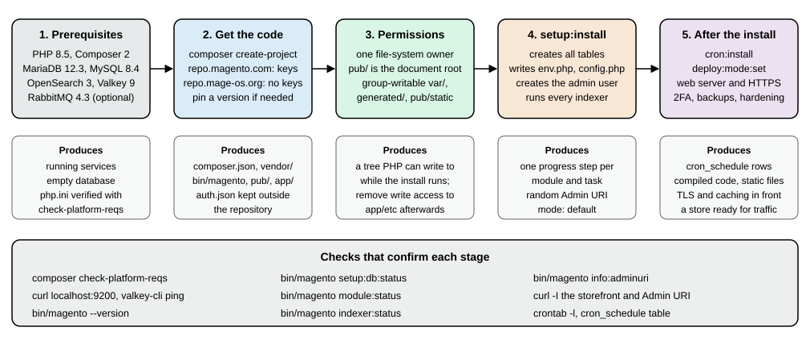
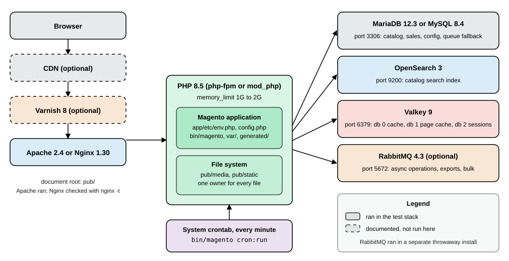
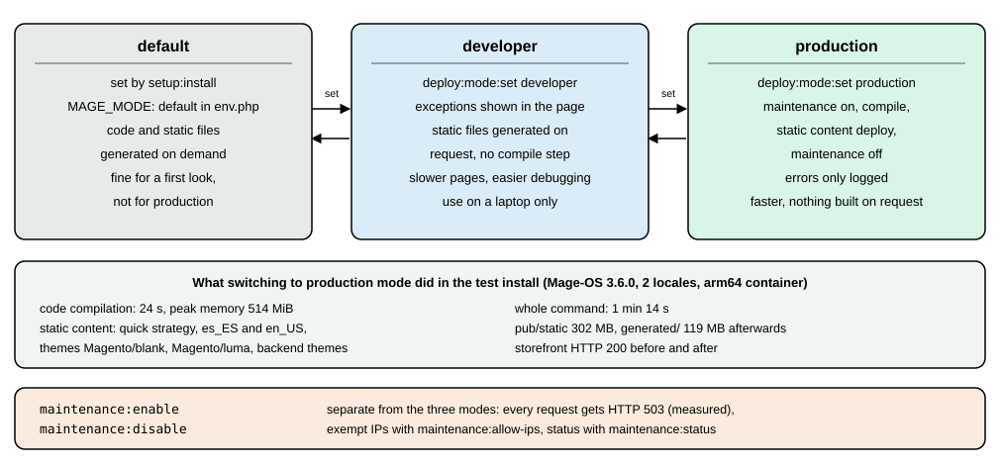
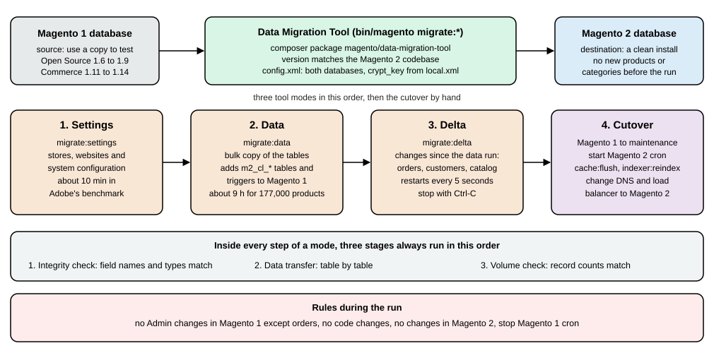

Installation
|
This content was generated with the assistance of AI and should be verified against the official documentation before being relied on in production. |
This page covers every step between an empty server and a Magento store that serves pages, runs cron and queue consumers and is ready for traffic, for the self-hosted editions: Magento Open Source 2.4.9 (general availability 2026-05-12, standard support until 2029-05-31), Adobe Commerce 2.4.9 on your own infrastructure and Mage-OS 3.6.0 (2026-10-14, based on the Magento 2.4.9 code). It was checked on 2026-10-27. It does not cover Adobe Commerce on cloud infrastructure, whose projects are built and deployed from a Git repository by Adobe’s tooling, or Adobe Commerce as a Cloud Service, which is installed by Adobe. The editions are compared on Editions and Ecosystem, the support dates and the full requirements matrix are on Versions, Lifecycle and Requirements, and a laptop setup with Docker is on Local Development Environments. The first screens of the Admin after an install are on Admin and Store Setup.
Everything shown as run was run on 2026-10-27 with Mage-OS 3.6.0 (bin/magento --version prints
Mage-OS CLI 3.6.0 (based on Magento 2.4.9)) in Docker containers on an arm64 host: PHP 8.5.12, Composer 2.10.3,
Apache 2.4.69, MariaDB 11.8.9 and 12.3.3, OpenSearch 3.9.0, Valkey 9.1.3 and RabbitMQ 4.4.0. Nginx 1.30.6 was used to
check the Nginx configuration. The Adobe Commerce and Magento Open Source packages come from repo.magento.com, which
needs a personal key pair, so that download was documented and not executed; everything after the download is the same
code path. The running example, Pocket Coffee, is a Madrid shop with a Spanish default store view and an English one,
priced in euros, installed with --language=es_ES --currency=EUR --timezone=Europe/Madrid.

Choose a path
| Path | What it gives you | Needs |
|---|---|---|
|
Magento Open Source from Adobe, the reference for every Adobe document. |
A Marketplace account and an access key pair, even for the open source edition. |
|
Adobe Commerce on your own servers. |
A licence and a key pair that is entitled to the Commerce packages (the Marketplace shows the Access Keys section only to entitled accounts). |
|
Mage-OS, a community distribution of the Magento Open Source code with its own release cadence. |
Nothing: the repository is public and needs no keys. Run on 2026-10-27 in about one minute with a warm Composer cache. |
Cloud project template ( |
Adobe Commerce on cloud infrastructure, deployed with a Git push. |
A Cloud project. Not covered here. |
Git clone of |
The code the contributors work on, not a store. |
Adobe’s installation guide points developers who contribute to Magento Open Source to the Git-based method; a store installs from Composer. |
Adobe Commerce as a Cloud Service |
Nothing to install. |
An Adobe-provisioned instance. |
Which distribution fits a project is a business and ecosystem decision (see Editions and Ecosystem).
For the install itself the two repositories behave the same way: the metapackage requires about 360 component packages
(magento/... or mage-os/...), Composer resolves them and the result is a project directory with bin/magento.
Requirements
The system requirements page of the 2.4.9 documentation lists PHP 8.5 only, and the 2.4.9 release notes say PHP 8.5 is fully supported and "PHP 8.4 is allowed for upgrade purposes only (not recommended for production)". Treat PHP 8.5 as the production target and 8.4 as a stepping stone while you upgrade. The two older lines that still receive security patches are listed for planning.
| Component | 2.4.9 (GA 2026-05-12) | 2.4.8-p5 | 2.4.7-p10 |
|---|---|---|---|
PHP |
8.5 |
8.4, 8.3 |
8.3, 8.2 |
Composer |
2.10 |
2.x |
2.x |
MariaDB |
12.3 (Cloud: 12.3 recommended, 11.8) |
11.4, 11.8 |
10.11, 11.8 |
MySQL |
8.4 (8.0 reached end of support 2026-04-30) |
8.4 |
not supported |
Search engine |
OpenSearch 3 (2.x compatibility kept); Elasticsearch is not listed |
OpenSearch 3, Elasticsearch 8 |
OpenSearch 2.19 and 3, Elasticsearch 8 |
Cache and sessions |
Valkey 9 (Redis is not listed) |
Valkey 8.1 |
Valkey 8.1; Redis not supported |
Message queue |
RabbitMQ 4.3, ActiveMQ Artemis 2 |
see the requirements page |
see the requirements page |
Web server and cache |
Nginx 1.30, Apache 2.4, Varnish 8 |
see the requirements page |
see the requirements page |
Three details matter in practice. The release notes still say RabbitMQ 4.2 in one place while the requirements table
says 4.3; use the table. The database line for 2.4.9 is MariaDB 12.3 (the 2.4.9 text says "Upgrade to MariaDB 12.3
before you upgrade to 2.4.9"); MariaDB 11.8 installed and ran Pocket Coffee without a problem in this test, but it is
not the combination Adobe tests on premises. And Mage-OS declares a wider PHP range than Adobe: the
mage-os/product-community-edition 3.6.0 package requires php ~8.3.0||~8.4.0||~8.5.0, so a Mage-OS store can still
run on PHP 8.3 while an Adobe 2.4.9 store cannot.
Source: Adobe: System requirements
PHP extensions and php.ini
Composer enforces the extension list when it resolves the project, and composer check-platform-reqs reports it at any
time. In the Mage-OS 3.6.0 project the command printed success for every line:
$ composer check-platform-reqs Checking platform requirements for packages in the lock file composer-plugin-api 2.9.0 success composer-runtime-api 2.2.2 success ext-bcmath 8.5.12 success ext-ctype * success ext-curl 8.5.12 success ext-dom 20031129 success ext-fileinfo 8.5.12 success ext-filter 8.5.12 success ext-gd 8.5.12 success ext-hash 8.5.12 success ext-iconv 8.5.12 success ext-intl 8.5.12 success ext-json 8.5.12 success ext-libxml 8.5.12 success ext-mbstring * success ext-openssl 8.5.12 success ext-pcre 8.5.12 success ext-pdo_mysql 8.5.12 success ext-phar 8.5.12 success ext-reflection 8.5.12 success ext-simplexml 8.5.12 success ext-soap 8.5.12 success ext-sockets 8.5.12 success ext-sodium 8.5.12 success ext-tokenizer 8.5.12 success ext-xml 8.5.12 success ext-xmlwriter 8.5.12 success ext-xsl 8.5.12 success ext-zip 1.22.8 success ext-zlib 8.5.12 success lib-libxml 2.9.14 success php 8.5.12 success php-64bit 8.5.12 success
Source: Adobe: PHP settings
Adobe’s list for the Adobe-hosted packages also names ext-ftp, which the Mage-OS project does not require, and the
Docker image used here compiled the other extensions (bcmath gd intl pdo_mysql soap sockets xsl zip sodium pcntl)
with docker-php-ext-install. Two optional extensions are worth adding: pcntl, which the indexers need to run in
parallel mode, and igbinary, which the installer writes as the cache serialiser ("serializer": "igbinary"), as the
installer help says it is 70 percent faster and 58 percent smaller than PHP serialisation. A container without
igbinary still served pages in the first test, and the stack built later with the extension installed worked
the same way, so install it when you want the smaller, faster cache entries.
The documented php.ini settings are short:
| Setting | Value and reason |
|---|---|
|
1G to compile code and deploy static files, 2G for debugging, 3G to 4G for tests. The tests here used 2G; |
|
|
|
|
|
256 MB and 60000 in the tested image, with |
|
Set it, or PHP warns that "It is not safe to rely on the system’s timezone settings" during the install and cron can misbehave. |
|
|
|
|
The same settings must reach both the command-line PHP and the web server’s PHP (php.ini for Apache’s module,
the FPM pool file and the PHP command line’s own ini). Adobe "strongly recommends" the same values in both, because the install
and upgrade run in the CLI and the store runs in the web SAPI. In Debian-style systems these are different directories
(/etc/php/8.5/cli, /etc/php/8.5/fpm).
; zz-magento.ini used for the tests
memory_limit=2G
max_execution_time=1800
zlib.output_compression=On
opcache.enable=1
opcache.memory_consumption=256
opcache.max_accelerated_files=60000
opcache.validate_timestamps=1
realpath_cache_size=10M
realpath_cache_ttl=7200
date.timezone=UTCSource: Adobe: PHP settings
The services
A store needs four network services besides PHP and the web server: a database, a search engine, a key-value store and, optionally, a message broker. The test install ran them as containers on one Docker network.

MariaDB or MySQL
Create an empty database with its own user. The installer creates the tables, so the account needs full rights on that schema only.
CREATE DATABASE magento CHARACTER SET utf8mb4;
CREATE USER 'magento'@'%' IDENTIFIED BY '<choose-a-strong-password>';
GRANT ALL PRIVILEGES ON magento.* TO 'magento'@'%';
FLUSH PRIVILEGES;Replace % with the host the web server connects from. Adobe’s database page adds four requirements that you must handle yourself.
Magento creates database triggers when an indexer runs in Update by Schedule mode, so the account needs the right to
create triggers (ALL PRIVILEGES includes it). Enable the STRICT_ALL_TABLES SQL mode on a new project. Use only row-based replication, because statement-based
replication is not supported and CREATE TEMPORARY TABLE inside transactions breaks GTID-based replication on some
managed services. And raise max_allowed_packet above its 16 MB default if you import large catalogues. The installer
itself rejects a wrong password early:
SQLSTATE[HY000] [1045] Access denied for user 'magento'@'172.20.0.5' (using password: YES) In InstallCommand.php line 291: Parameter validation failed
OpenSearch
2.4.9 uses OpenSearch 3 (2.x still works). The Mage-OS 3.6.0 installer still accepts --search-engine=elasticsearch8,
although Adobe’s 2.4.9 table lists only OpenSearch. The installer stops when it cannot reach the search engine (see the
errors table), because the storefront catalogue, layered navigation and search all read from it. A single node is enough for a laptop or a small shop:
docker network create ec-net
docker run -d --name search --network ec-net --memory 1g \
-e discovery.type=single-node \
-e DISABLE_SECURITY_PLUGIN=true \
-e DISABLE_INSTALL_DEMO_CONFIG=true \
-e OPENSEARCH_JAVA_OPTS="-Xms512m -Xmx512m" \
opensearchproject/opensearch:3
docker exec search curl -s localhost:9200Source: Adobe: Search engine overview
On 2026-10-27 the last command answered with the version block ("number": "3.9.0", "distribution": "opensearch").
The security plugin is disabled in this example because the container is reachable only from its Docker network; on a
shared network keep it on and give the installer --opensearch-enable-auth=1 --opensearch-username=<user> --opensearch-password=<password>.
Give every store sharing a cluster its own index prefix with --opensearch-index-prefix: an index is named
<prefix>_product_<store view id>_v<version>, so the installs with prefixes magento2 and pocketcoffee never touch each other.
Valkey
Valkey 9 is the tested key-value store for 2.4.9. It is protocol-compatible with Redis 7.2 and the PHP side still talks
to it with Redis commands, which is why some option names still say redis. Magento uses three databases of one server:
database 0 for the cache, 1 for the full-page cache and 2 for sessions, "to protect against data loss" when you flush one
of them.
docker run -d --name cache --network ec-net --memory 128m valkey/valkey:9-alpine
docker exec cache valkey-cli ping
docker exec cache valkey-cli info server | grep -E "redis_version|valkey_version"Source: Adobe: Valkey for the cache
The server reports redis_version:7.2.4 (the compatibility version) and valkey_version:9.1.3. Details of the Magento
side, including a trap in the session options, are in the Valkey section below.
RabbitMQ (optional)
Without a broker Magento falls back to a MySQL queue (tables queue, queue_message, queue_message_status), which
is acceptable for a small shop. Consumers process asynchronous operations such as REST bulk and asynchronous
endpoints and Inventory mass actions; a broker is the scalable transport for them. Adobe lists RabbitMQ 4.3 and ActiveMQ Artemis 2 for 2.4.9; the release
notes call Artemis the long-term replacement for RabbitMQ. The test used the public rabbitmq:4 image, which resolved to
RabbitMQ 4.4.0 on 2026-10-27, newer than the version in Adobe’s table, and everything worked:
docker run -d --name rabbitmq --network ec-net --memory 512m \
-e RABBITMQ_DEFAULT_USER=magento \
-e RABBITMQ_DEFAULT_PASS='<choose-a-strong-password>' \
rabbitmq:4
docker exec rabbitmq rabbitmqctl versionComposer access
Marketplace access keys
repo.magento.com requires authentication for every package, open source ones included. In the Commerce Marketplace
open My Profile, choose Access Keys in the Marketplace tab and select Create a New Access Key. You get two
32-character strings: the public key is the Composer username and the private key is the password. Since August
2022 the account owner needs an Adobe ID linked to the Commerce account before keys can be generated, and keys carry the
entitlement of the account (the Primary Contact’s MAGEID), which is why a developer may see no Access Keys section until
the account owner grants access or an invoice is settled. You can disable, re-enable or delete keys, for example when a
contractor leaves; key one pair per person and per CI system so one can be revoked alone.
auth.json and the environment
Composer reads credentials from a global auth.json, a project auth.json or the COMPOSER_AUTH environment variable,
so you are not prompted each time. The project ships auth.json.sample; a real auth.json must never be committed.
# global, outside every repository: ~/.composer/auth.json (or $COMPOSER_HOME/auth.json)
composer config -g http-basic.repo.magento.com "<public-key>" "<private-key>"
# CI: inject the secret as an environment variable
export COMPOSER_AUTH='{"http-basic":{"repo.magento.com":{"username":"<public-key>","password":"<private-key>"}}}'With placeholder values, the first command wrote an auth.json whose http-basic object had the key
repo.magento.com with username and password, and composer config -g --list printed
[http-basic.repo.magento.com.username] for the second form. No request to repo.magento.com was made. Mage-OS’s
repository needs none of this.
Get the code
Work as the account that will own the files (see the next section) and use an empty directory: Composer refuses a directory that already holds anything, including a log file you redirected into it ("Project directory is not empty").
# Magento Open Source from Adobe (prompts for the key pair unless auth.json exists)
composer create-project --repository-url=https://repo.magento.com/ \
magento/project-community-edition=2.4.9 /var/www/pocketcoffee
# Adobe Commerce on your own infrastructure
composer create-project --repository-url=https://repo.magento.com/ \
magento/project-enterprise-edition=2.4.9 /var/www/pocketcoffee
# Mage-OS 3.6.0, no keys needed (run on 2026-10-27)
composer create-project --repository-url=https://repo.mage-os.org/ \
mage-os/project-community-edition=3.6.0 /var/www/pocketcoffeeSource: Adobe: Install with Composer
The version after = pins a release; without it Composer takes the newest stable one. Patch releases use the 2.4.8-p5
naming; Adobe also publishes monthly isolated security builds such as 2.4.9-2026-oct, which are applied to a project on
the latest patch line and are described on Versions, Lifecycle and Requirements.
The Mage-OS repository listed these project versions on 2026-10-27: 3.6.0, 3.5.0, 3.4.0, 3.3.0, 3.2.0, 3.1.0 and 3.0.0,
then 2.3.0 down to 2.0.0 and 1.x.
The Mage-OS run took about 50 seconds to download the 609 packages of the lock file (dev packages included), ended with
PHP CodeSniffer Config installed_paths set to ../../mage-os/magento-coding-standard,... and No security vulnerability
advisories found., and produced this top-level layout:
app bin dev generated lib nginx.conf.sample phpserver pub setup var vendor auth.json.sample composer.json composer.lock .htaccess .htaccess.sample .user.ini ...
The project composer.json is short: three require lines (mage-os/product-community-edition, the two Composer
plugins mage-os/composer-root-update-plugin and mage-os/composer-dependency-version-audit-plugin, all 3.6.0), a
repositories entry for https://repo.mage-os.org/, an autoload section that maps app/code and generated/code and
"extra": {"magento-force": "override"}.
Production deployments should install with composer install --no-dev from the committed composer.lock, so the
production tree has no test tools.
Ownership, permissions and the document root
Magento has one rule: a single user owns every file and runs both the command line and the web server’s PHP. Adobe calls it the file system owner. The simplest shared-hosting layout is the account that owns the web root; on a server it is usually a deployment user in the web server’s group, with group-writable directories only where Magento writes.
cd /var/www/pocketcoffee
find var generated vendor pub/static pub/media app/etc -type f -exec chmod g+w {} +
find var generated vendor pub/static pub/media app/etc -type d -exec chmod g+ws {} +
chown -R :www-data . # Ubuntu; use the web server's group
chmod u+x bin/magentoSource: Adobe: Set file permissions
The setgid bit (g+s) on directories makes new files inherit the group. Run bin/magento as the owner only
(sudo -u www-data php bin/magento ... or su <owner> -s /bin/bash -c ...): a command run once as root leaves root-owned
files in generated/ and var/, and every later command then fails. That is not hypothetical; in this test a
php bin/magento --version run as root produced interceptor files that the file system owner could not delete, and
deploy:mode:set production answered with a wall of The "/.../generated/code/.../Interceptor.php" file can't be deleted. Warning!unlink(...): Permission denied messages until chown -R repaired the tree.
The document root of the web server must be the pub/ directory. The installer records this as
"directories": {"document_root_is_pub": true} in app/etc/env.php; with it, app, vendor, var, setup and the
rest are not under the web root at all, so the code and the configuration files cannot be requested by URL. The installer message
For security, remove write permissions from these directories: '.../app/etc' reminds you to remove the write bit from
app/etc once you are done (see After the install).
setup:install
bin/magento setup:install is the one command that creates the tables, writes the deployment configuration, creates
the administrator and reindexes. Every value can be an option, so it works unattended in scripts and containers. The
complete command used for Pocket Coffee, with a Madrid timezone, the Spanish locale and euro as the base currency:
bin/magento setup:install \
--base-url=http://localhost:8093/ \
--db-host=db --db-name=magento --db-user=magento --db-password='<db-password>' \
--admin-firstname=Ada --admin-lastname=Lovelace --admin-email=admin@example.test \
--admin-user=admin --admin-password='<admin-password>' \
--language=es_ES --currency=EUR --timezone=Europe/Madrid --use-rewrites=1 \
--search-engine=opensearch --opensearch-host=search --opensearch-port=9200 --opensearch-index-prefix=pocketcoffee \
--session-save=redis --session-save-redis-host=cache --session-save-redis-db=2 \
--cache-backend=valkey --cache-backend-valkey-server=cache --cache-backend-valkey-db=0 \
--page-cache=valkey --page-cache-valkey-server=cache --page-cache-valkey-db=1The command took 11 seconds in the Docker stack and ended with:
11 indexer(s) are indexed. [Progress: 1348 / 1348] [SUCCESS]: Magento installation complete. [SUCCESS]: Magento Admin URI: /admin_rvpka41 Nothing to import.
The number of progress steps is the count of modules and tasks (1348 here, 1349 in a second install), so it differs between distributions and versions. The same run printed these messages in this order: "Installing admin user", "Caches clearing", "Disabling Maintenance Mode" and "Post installation file permissions check".
The options, by group
setup:install --help of Mage-OS 3.6.0 lists about 180 options. These are the ones that matter, grouped by what they
configure. Defaults are from the help output.
| Group and options | Purpose | Notes |
|---|---|---|
|
The store URL, HTTPS and URL rewriting. |
All six are marked "Deprecated, use config:set with path web/…" in the 2.4.9 help: set them with |
|
Default locale, base and default currency, time zone. |
Marked deprecated as well ( |
|
Database connection. |
|
|
The first administrator. |
The password must be at least 7 characters and include both letters and digits (the installer prints "Your password must be at least 7 characters." and "Your password must include both numeric and alphabetic characters." and stops with "Parameter validation failed"). |
|
The Admin path. |
Omit it. Adobe recommends the generated random URI because it is harder to guess; the installer prints it ( |
|
Search engine, host, port, authentication, index prefix and timeout. |
|
|
Where sessions are stored: |
|
|
Cache and full-page cache backends and databases. |
|
|
RabbitMQ (AMQP) or ActiveMQ Artemis (STOMP) and queue behaviour. |
|
|
The lock service used by cron and indexers. |
The default provider is |
|
Varnish hosts that receive purge requests. |
Needed in production when Varnish is in front ( |
|
A prefix for order numbers. |
Handy when two installs send orders to the same payment account and you must tell them apart. |
|
Install with some modules on or off. |
Comma-separated module names. |
|
Installs with sample data. |
Sample data packages are added with |
|
Repeatable and guided installs. |
|
|
The encryption key and the GraphQL salt. |
Normally generated. Provide |
|
Remote media storage (S3-compatible). |
|
Mage-OS adds a helper: a setup:install run that fails parameter validation starts with the line Tip: Run bin/magento install for a guided
interactive installation. The command install ("Interactive Mage-OS installation wizard", registered in the
list output) asks the same questions in stages (environment, database, admin, store, backend, document root, search
engine, Redis or Valkey, RabbitMQ, logging, sample data and theme), detects services it can reach, checks permissions
and runs setup:install for you; with -vvv it prints the underlying command. It needs a terminal, so it was listed
and read but not driven here.
What the installer writes
-
app/etc/env.phpholds what is specific to this environment: the Admin path, the database connection, the cache, session and queue settings,MAGE_MODE, thecache_typesswitches, the lock provider and thecryptkey. -
app/etc/config.phpholds what must be the same in every environment: the module list with its enabled flags (more than 330 entries in the Mage-OS 3.6.0 install) and, once you runapp:config:dump, scopes and system settings. -
The database holds everything else, in
core_config_dataand the entity tables.
An excerpt of the generated env.php (without the crypt key, the database password and the GraphQL salt, which are
secrets and must never be pasted anywhere or committed with a public repository):
return [
'backend' => ['frontName' => 'admin_rvpka41'],
'remote_storage' => ['driver' => 'file'],
'queue' => ['consumers_wait_for_messages' => 1],
'db' => [
'table_prefix' => '',
'connection' => [
'default' => [
'host' => 'db', 'dbname' => 'magento', 'username' => 'magento',
'password' => '<db-password>',
'model' => 'mysql4', 'engine' => 'innodb', 'active' => '1',
'driver_options' => [1013 => false],
],
],
],
'resource' => ['default_setup' => ['connection' => 'default']],
'x-frame-options' => 'SAMEORIGIN',
'MAGE_MODE' => 'default',
'lock' => ['provider' => 'db'],
'directories' => ['document_root_is_pub' => true],
'downloadable_domains' => ['localhost'],
'install' => ['date' => '...'],
];Source: Adobe: env.php reference
Three observations from the run. The installer wrote MAGE_MODE as default and left cache types enabled (16 types).
downloadable_domains was set from the base URL (localhost); a store behind another domain must add that domain here or
with bin/magento downloadable:domains:add (and downloadable:domains:show lists them). All 11 indexers
finished Ready with Update On: Schedule, which means index changes are queued by database triggers and applied by
cron: with cron not running, a product edit does not reach search or the category pages (see Cron).
Verification after the install, with their 2026-10-27 results in the Docker stack:
bin/magento --version # Mage-OS CLI 3.6.0 (based on Magento 2.4.9)
bin/magento setup:db:status # All modules are up to date.
bin/magento info:adminuri # Admin URI: /admin_rvpka41
bin/magento indexer:status # 11 indexers, all Ready, Update On: Schedule
bin/magento deploy:mode:show # Current application mode: default.
curl -s -o /dev/null -w "%{http_code}\n" http://localhost:8093/ # 200
curl -s -o /dev/null -w "%{http_code}\n" http://localhost:8093/admin_rvpka41 # 200Running the installer again
Installing over an installed database is accepted and rerun end to end; in the test it reused the existing Admin URI
and finished with [SUCCESS]: Magento installation complete. Use --cleanup-database only when you mean to drop every
table: in one test a failed run that included it had already emptied the database when it stopped at the search-engine
check, and the store answered HTTP 500 afterwards.
Common errors
| What you see | Cause and fix |
|---|---|
|
The target directory has a file in it. Use an empty directory and write logs elsewhere. |
|
The database credentials or the host part of the grant are wrong. Test with the |
|
Wrong |
|
The administrator password policy, enforced before anything is created. |
|
Customer account confirmation is on ( |
|
The two-factor module is on and the admin has no second factor. Configure it, or on a local machine disable |
|
Files created by another user. Run |
Valkey and Redis
Adobe’s 2.4.9 documentation describes dedicated Valkey flags: --session-save=valkey with
--session-save-valkey-<parameter>, and --cache-backend=valkey and --page-cache=valkey with their own option families,
and says the options of 2.4.8 and earlier keep the redis names. The Mage-OS 3.6.0 installer accepts both families, and
the tests separated three cases:
| Option set | Effect in the test | Verified by |
|---|---|---|
|
The cache used the Valkey server, backend name |
|
|
Sessions were stored in Valkey database 2. |
|
|
The installer wrote |
The |
So on Mage-OS 3.6.0, use the redis session flags against a Valkey server (the same flags Adobe says to use on 2.4.8 and
earlier), and verify with valkey-cli that sess_ keys appear. The Mage-OS source explains it: the installer’s session
option class tests a constant instead of the chosen handler, so the Valkey input options are never mapped to the
configuration, and the runtime session handler only reads the session/redis block. I did not run the Adobe-hosted
2.4.9 packages, so the same check on your own install is the only reliable answer for that edition.
The same flags work after the install with setup:config:set, which rewrites the matching part of env.php. It
accepted --session-save=redis --session-save-redis-host=cache --session-save-redis-db=5 and removed the stale
valkey block, and it printed "We saved default values for these options: …", a reminder that it also writes the
defaults for options you did not pass.
bin/magento setup:config:set --session-save=redis \
--session-save-redis-host=cache --session-save-redis-port=6379 --session-save-redis-db=2
docker exec cache valkey-cli -n 2 dbsize
docker exec cache valkey-cli -n 2 --scan | head -3Production advice from Adobe’s pages: keep the three databases distinct, set the session max_concurrency to at least
10 percent of the number of PHP processes (the default is 6 and disable_locking defaults to 0, which keeps session
locking on), and read the L2 cache page when you size the key-value memory. Cache databases can be rebuilt after a
restart; session data cannot, so a non-persistent session database logs every customer out when it restarts.
Source: Adobe: Use Valkey for the cache
OpenSearch settings after the install
The installer stores the connection in core_config_data (catalog/search/engine, catalog/search/opensearch_server_hostname,
..._port, ..._index_prefix and so on), so you change it with config:set and then reindex:
bin/magento config:show catalog/search/engine # opensearch
bin/magento config:show catalog/search/opensearch_server_hostname # search
bin/magento indexer:reindex catalogsearch_fulltext
docker exec search curl -s "localhost:9200/_cat/indices?h=index,docs.count&s=index"Source: Adobe: Search engine
On the fresh Pocket Coffee install the last command listed pocketcoffee_product_1_v2 0: one product index per store
view, with a version suffix, and no documents yet because the catalogue was empty. On a store with two products another
install’s index showed magento2_product_1_v5 2 after indexer:reindex. A cluster health of yellow on a single
node is normal: replicas have nowhere to go.
RabbitMQ settings and consumers
Configure the broker with the installer options or afterwards, which writes the queue block of env.php:
bin/magento setup:config:set --amqp-host=rabbitmq --amqp-port=5672 \
--amqp-user=magento --amqp-password='<choose-a-strong-password>' --amqp-virtualhost=/
bin/magento setup:upgradeSource: Adobe: Message queue framework
setup:upgrade declares the exchanges and queues: 23 queues appeared in RabbitMQ (async.operations.all,
product_action_attribute.update, catalog_product_generate_urls, inventory.reservations.update,
media.storage.catalog.image.resize, export, codegenerator, product_alert.queue and others), and
bin/magento queue:config:status answered Queue config files are up to date. The resulting env.php block:
'queue' => [
'consumers_wait_for_messages' => 1,
'amqp' => [
'host' => 'rabbitmq', 'port' => '5672',
'user' => 'magento', 'password' => '<choose-a-strong-password>', 'virtualhost' => '/',
],
],Source: Adobe: env.php reference
An end-to-end check of the whole chain: an asynchronous REST call stores a message instead of doing the work, a
consumer does the work. The administrator token comes from POST /rest/V1/integration/admin/token; here it is in the variable ${TOKEN}.
curl -s -X POST http://localhost:8093/rest/async/V1/products \
-H "Authorization: Bearer ${TOKEN}" -H "Content-Type: application/json" \
-d '{"product":{"sku":"PC-ASYNC-1","name":"Async test","price":1.5,"type_id":"simple","attribute_set_id":4,"status":1}}'
# {"bulk_uuid":"564e003a-569a-496d-8aed-647dd2c9331b","request_items":[{"id":0,"data_hash":"...","status":"accepted"}],"errors":false}
docker exec rabbitmq rabbitmqctl list_queues name messages | grep async # async.operations.all 1
bin/magento queue:consumers:start async.operations.all --max-messages=1
docker exec rabbitmq rabbitmqctl list_queues name messages | grep async # async.operations.all 0After the consumer ran, the queue was empty, the product PC-ASYNC-1 existed in catalog_product_entity and the row in
magento_operation had status 1 (complete). With the MySQL fallback the same flow needs consumers but no broker; that variant was not run.
Consumers must be running for any of this to work. bin/magento queue:consumers:list printed 23 consumer names in the
test. In production the cron job consumers_runner (group consumers) starts them, and its behaviour is configured in
env.php; the defaults come from the framework code, and are listed here from the Mage-OS source:
env.php key |
Meaning |
|---|---|
|
Whether cron starts consumers at all; default |
|
Messages a consumer handles before it exits and is restarted; default |
|
A list of consumer names to run; empty means all. |
|
A map of consumer name to process count. |
|
|
The ActiveMQ Artemis path uses the --stomp-* options and the STOMP framework in 2.4.5 and later, with ANYCAST
addressing (point-to-point delivery to one consumer). The Mage-OS project includes mage-os/framework-stomp, but no
Artemis broker was started here.
Cron
Magento does everything that is not a page request in cron: indexer updates in schedule mode, reindexing of invalid indexers, sitemap generation, currency rate updates, transactional emails queued for sending, catalogue price rule application, session and cache cleanup, newsletter queues, the queue consumers and more. There is one entry point:
bin/magento cron:install # Crontab has been generated and saved
crontab -l#~ MAGENTO START <64-character hash> * * * * * /usr/local/bin/php /var/www/pocketcoffee/bin/magento cron:run >> /var/www/pocketcoffee/var/log/magento.cron.log 2>&1 #~ MAGENTO END <64-character hash>
Source: Adobe: Configure and run cron
cron:install writes that block into the crontab of the user who ran it (so run it as the file system owner), tagged
with a hash so that bin/magento cron:remove removes exactly it ("Magento cron tasks have been removed"). cron:run
accepts --group=<name> and --exclude-group=<name>; the groups defined in the Mage-OS install were default,
index, consumers, translate_products and translate_select_attributes.
Cron behaves in two phases, which surprises people. The first cron:run only schedules jobs for the next period by
writing rows to the cron_schedule table; later runs execute them. After four manual runs in a row the test
table held 299 pending and 19 success rows across 29 distinct job codes, for example
catalog_product_outdated_price_values_cleanup, sales_grid_order_async_insert and sales_send_order_emails, each with
scheduled_at, executed_at and finished_at timestamps. SELECT status, COUNT(*) FROM cron_schedule GROUP BY status
is the quickest health check. The Mage-OS 3.6.0 Admin has no grid for the table; its Stores > Configuration > Advanced
> System > Cron (Scheduled Tasks) section sets, for each cron group (default, index, consumers and the two
translation groups), Generate Schedules Every, Schedule Ahead for, Missed if Not Run Within, History Cleanup
Every, Success History Lifetime, Failure History Lifetime and Use Separate Process. In a container
remember that the crontab only fires while a cron daemon runs, so start one in the image or run a sidecar container
that calls cron:run every minute.
Application modes and production deployment

The mode lives in MAGE_MODE of env.php (or an environment variable, which wins: deploy:mode:show says "Environment
variables may override this value"). Default mode is what the installer leaves and is not meant for production.
Developer mode shows exceptions and generates code and static files when they are requested. Production mode serves
precompiled code and prebuilt static files and hides errors. Adobe on cloud infrastructure supports only production and
maintenance modes.
bin/magento deploy:mode:set developer # Enabled developer mode.
bin/magento deploy:mode:set production # compile, deploy static content, maintenance on during the work
bin/magento deploy:mode:set production --skip-compilation # use when generated/ was built earlier (CI)
bin/magento deploy:mode:showSwitching clears var/cache, generated/metadata, generated/code, var/view_preprocessed and pub/static (keeping
.htaccess files and the static version file). In the test, on a separate Mage-OS install with the Spanish and
English locales, deploy:mode:set production took 1 minute 14 seconds: "Enabling maintenance mode", compilation in 24
seconds with a peak of 514 MiB (all 9 generators: proxies, repositories, service data attributes, application code
generator, interceptors, area configuration, interception cache, application action list, plugin list), static content
with the quick strategy for the themes Magento/blank, Magento/luma, Magento/backend and the Mage-OS admin theme
in es_ES and en_US (about 1800 files per storefront theme, 2550 to 2800 per admin theme), then "Disabling maintenance
mode" and "Enabled production mode." Afterwards pub/static held 302 MB and generated/ 119 MB, MAGE_MODE was
production, and the storefront answered 200 with asset URLs of the form
static/version1793120232/frontend/Magento/luma/es_ES/css/styles-m.css. The number after version is the content of
pub/static/deployed_version.txt and changes with every static deployment, so browsers refetch changed files while a
CDN can cache them for a year.
A production deployment is therefore a build step, not a runtime step: build once in CI (composer install --no-dev,
bin/magento setup:di:compile, bin/magento setup:static-content:deploy -f en_US es_ES), ship the tree and run
bin/magento setup:upgrade --keep-generated plus bin/magento cache:flush on the server. Without --keep-generated the
upgrade deletes the generated classes and prints the instruction to run setup:di:compile again (module:disable printed
"Generated classes cleared successfully. Please run the 'setup:di:compile' command to generate classes." in the test).
Maintenance mode is independent of the three modes. bin/magento maintenance:enable made every request answer HTTP 503
in the test (curl printed 503), maintenance:status printed "Status: maintenance mode is enabled" and "List of exempt
IP-addresses: none", and maintenance:disable restored 200. Add --ip=<address> to maintenance:enable, or run
maintenance:allow-ips <address>, to let your own address through while you test.
A production deployment on one host is what this section describes. Running the same code as an immutable image on several Kubernetes nodes, with the database, OpenSearch, Valkey and RabbitMQ as managed services, is described in Cloud: Reference Architecture and Cloud: Container Image and Pipeline Build.
Web server recipes
The web server’s job is small: serve pub/ directly, send PHP requests to Magento and cache static files for a long
time. Choose one of the two supported servers.
Apache
The test image used php:8.5-apache with PHP as an Apache module (mod_php). It needs mod_rewrite, mod_headers and
mod_expires, a virtual host whose DocumentRoot is pub/ and AllowOverride All so the shipped .htaccess files
(pub/.htaccess, pub/static/.htaccess, pub/media/.htaccess) take effect.
<VirtualHost *:80>
ServerName pocketcoffee.example.test
DocumentRoot /var/www/pocketcoffee/pub
<Directory /var/www/pocketcoffee/pub>
AllowOverride All
Require all granted
</Directory>
ErrorLog ${APACHE_LOG_DIR}/pocketcoffee-error.log
CustomLog ${APACHE_LOG_DIR}/pocketcoffee-access.log combined
</VirtualHost>Source: Adobe: Apache
apachectl -M listed rewrite_module, headers_module, expires_module and deflate_module in the test image. For
anything beyond a laptop put PHP-FPM behind Apache (proxy_fcgi) instead of mod_php, so web workers and PHP workers
can be sized separately; that variant was not run here. The shipped .htaccess also carries a commented
SetEnv MAGE_MODE line for choosing the mode from the server configuration.
Nginx with PHP-FPM
Nginx is the web server that the shipped sample configuration targets. The project root contains nginx.conf.sample, a complete set of location
blocks (255 lines in 3.6.0): the PHP entry points index.php, get.php, static.php, health_check.php and the error
pages, the /static/ rewrite that strips the version123456 segment, long cache headers, denial of /media/customer/,
/media/downloadable/, /media/import/, /media/custom_options/ and /media/customer_address/, the setup and update
entry points (denied unless you open them), a gzip block and a final deny rule for .php, .phtml, .htaccess,
.htpasswd and .git anywhere else. You include it from your own server block:
upstream fastcgi_backend {
server unix:/run/php/php8.5-fpm.sock; # or 127.0.0.1:9000
}
server {
listen 80;
server_name pocketcoffee.example.test;
set $MAGE_ROOT /var/www/pocketcoffee;
set $MAGE_MODE production;
include /var/www/pocketcoffee/nginx.conf.sample;
}Source: Adobe: Nginx
nginx -t with this file, with the sample copied next to it and the upstream pointing at 127.0.0.1:9000, answered
the configuration file /etc/nginx/nginx.conf syntax is ok and configuration file /etc/nginx/nginx.conf test is
successful on nginx/1.30.6. No PHP-FPM pool was attached, so request handling through Nginx was not exercised. Two
points need your attention. The line add_header Cache-Control "public, max-age=31536000, immutable" in the /static/
block is commented out in the sample and should be enabled in production mode only (static URLs carry the version
segment, so a change in content changes the URL). And set $MAGE_MODE production only has an effect when you also pass
fastcgi_param MAGE_MODE $MAGE_MODE; in the PHP location blocks; the CLI-written env.php value is the safer source.
A PHP-FPM pool for a small store. Size pm.max_children by memory, not by guesswork: measure the resident size of a
worker under realistic load and divide the memory you can spare by it.
; /etc/php/8.5/fpm/pool.d/pocketcoffee.conf
[pocketcoffee]
user = www-data
group = www-data
listen = /run/php/php8.5-fpm.sock
listen.owner = www-data
listen.group = www-data
pm = dynamic
pm.max_children = 12
pm.start_servers = 4
pm.min_spare_servers = 2
pm.max_spare_servers = 6
pm.max_requests = 500
php_admin_value[memory_limit] = 756M
php_admin_value[max_execution_time] = 600
request_terminate_timeout = 600sSource: Adobe: PHP settings
The pool is a recipe assembled from Adobe’s PHP settings and the Nginx sample’s PHP_VALUE memory_limit=756M; it was not
run in this test. pm.max_requests recycles workers to bound memory growth, and request_terminate_timeout should be
at least the fastcgi_read_timeout of 600 s that the sample sets.
HTTPS and the proxy
Terminate TLS at the web server, a load balancer or a CDN, and tell Magento about it:
bin/magento config:set web/secure/base_url https://shop.example.com/
bin/magento config:set web/unsecure/base_url https://shop.example.com/
bin/magento config:set web/secure/use_in_frontend 1
bin/magento config:set web/secure/use_in_adminhtml 1
bin/magento config:set web/secure/offloader_header X-Forwarded-Proto
bin/magento config:set web/secure/enable_hsts 1
bin/magento config:set web/secure/enable_upgrade_insecure 1Source: Adobe: Set configuration values
Six of the seven commands were run (all but the unsecure base URL) and each answered Value was saved. With use_in_adminhtml on, a plain HTTP request to the Admin path
returned 302 to an https URL, and a request carrying X-Forwarded-Proto: https was accepted with 200, which is
what offloader_header is for: a TLS-terminating proxy that talks plain HTTP to PHP must announce the original scheme,
or Magento treats the request as plain HTTP. HSTS and upgrade-insecure-requests should be switched on only when HTTPS works
everywhere, because browsers remember HSTS. The install options --use-secure and --base-url-secure are deprecated
for the same reason as the other URL options.
Varnish
Magento’s full-page cache has two backends: the built-in one (Valkey or files) and Varnish. Varnish is faster for anonymous traffic and is the production recommendation. Set the application to Varnish, generate the VCL and give the purge hosts:
bin/magento config:set system/full_page_cache/caching_application 2
bin/magento setup:config:set --http-cache-hosts=varnish:80
bin/magento varnish:vcl:generate --backend-host=web --backend-port=80 \
--access-list=localhost --grace-period=300 --export-version=6 \
--output-file=/var/www/pocketcoffee/var/default.vclSource: Adobe: Configure Varnish
On Mage-OS 3.6.0 the command is provided by the bundled elgentos/magento2-varnish-extended 2.0.7 module, whose options
are --access-list, --backend-host, --backend-port, --export-version (default 6), --grace-period (default 300),
--input-file, --output-file and --enable-bfcache. With only the defaults it failed on a fresh install
(explode(): Argument #2 ($string) must be of type string, null given from the access-list reader); passing the values
explicitly produced a 10,523-byte VCL starting vcl 4.1;, with import cookie; and import std;, a backend default
with a /health_check.php probe and a ban(...) on X-Magento-Tags. The official varnish:stable container could not
compile it because the cookie VMOD is not in that image, so the VCL was generated and read but not run through Varnish.
Install varnish-modules (or the distribution’s package that contains libvmod_cookie) before trying it, and test with
varnishd -C -f default.vcl.
CDN, HTTP/2 and images
A CDN in front of pub/static and pub/media is a configuration change, not a code change: set the Base URL for Static
View Files and Base URL for User Media Files under Stores > Configuration > General > Web (the paths
web/unsecure/base_static_url, web/unsecure/base_media_url and their secure twins), keep the version123 segment in
the static URL so the CDN can use year-long cache headers. HTTP/2 is a web server feature
(listen 443 ssl; http2 on; in Nginx 1.25.1 and later), and it reduces the benefit of bundling and merging files;
Magento’s built-in bundling and merging are off by default, keep them off unless you have measured a gain, and they are
disabled for Hyvä store views, as Hyvä’s documentation advises (see Frontend: Hyvä, PWA Studio and Edge Delivery).
For images, catalog:images:resize pregenerates product image sizes after a bulk import, and the sample’s commented
image_filter block shows how Nginx can resize catalogue images instead of PHP when its image-filter module is loaded.
These items are summarised from the Adobe pages and the configuration sample; none of them was run here.
After the install
-
Take the write bit off
app/etc. The installer asks for it.chmod -R a-w app/etcafter you finish; temporarily restore it only when you changeenv.phporconfig.phpby hand. -
Keep the secrets out of Git.
env.phpcontains the encryption key (crypt), the database password and the GraphQL salt. Commitconfig.php(settings that are the same in every environment) and keepenv.phpper environment, outside the repository or encrypted. Rotate the encryption key after any compromise withbin/magento encryption:key:change, and re-encrypt stored data withencryption:data:re-encryptwhen you change it. -
Use a random Admin URI and two-factor authentication. Both are on by default; two-factor authentication for the Admin is provided by the
Magento_TwoFactorAuthmodule and is why an admin API token cannot be created until a second factor is set (the endpoint answered "Please ask an administrator with sufficient access to configure 2FA first." on a default install). Disabling the module is a local-development shortcut; see Security. -
Patch. Adobe has published seven security bulletins for Commerce and Magento Open Source in 2026 so far, one of them a CVSS 10 flaw exploited in the wild (APSB26-146, 2026-09-07). Install the newest patch or isolated build before launch and subscribe to the bulletins; the Security Scan Tool is free and covers Magento Open Source. Mage-OS publishes its own security releases (3.6.0 is one).
-
Back up.
bin/magento setup:backup --code --dbwrites code and database archives undervar/backups, which is a convenience, not a backup strategy: dump the database with your database tools and copypub/media, and test a restore. -
Skip sample data in production.
bin/magento sampledata:deployand the--use-sample-dataoption exist for demonstrations.sampledata:removeandsampledata:resetundo them incomposer.json. -
Do not run
setup:installagainst a store with data unless you mean to, and never with--cleanup-databaseon a production database.
Moving from Magento 1 with the Data Migration Tool
Magento 1 reached end of life in June 2020. Adobe still documents and maintains the Data Migration Tool (DMT), a
command-line tool that copies a Magento 1 database into a fresh Magento 2 database. It moves products, customers,
orders, stores and configuration, promotions and more; it does not move code, extensions or themes. Those are rebuilt for
Magento 2 (the Code Migration Tool helps convert extension code, and the Marketplace has Magento 2 versions of most
extensions). The tool supports migrating from Magento Open Source 1.6.x to 1.9.x and from Adobe Commerce 1.11.x to
1.14.x, and from Open Source 1.x to Adobe Commerce 2. The newest release on GitHub on 2026-10-27 was 2.4.8.1 (2025-06-03);
no 2.4.9 tag existed yet, and the package version must match the Magento 2 codebase, so check the releases page
before you plan a migration to 2.4.9.

Terms
-
A mode is an ordered set of operations:
settings,data,delta, run in this order. -
A step is a task inside a mode that decides what kind of data is migrated (the settings mode has a Stores step and a Settings step).
-
A stage is the unit inside a step: Integrity Check (compare field names and types between the two schemas), Data Transfer (copy table by table) and Volume Check (compare record counts).
-
Map files are XML files that describe differences between the Magento 1 and 2 tables. When a difference is not declared the tool shows an error and does not start; tables created by third-party extensions are copied as they are when nothing differs.
Prepare
-
Install Magento 2 normally (this page) with a topology at least equal to the Magento 1 system, then take a database dump immediately so you can restore the initial state.
-
Do not start Magento 2 cron jobs. Stop the Magento 1 cron jobs.
-
Do not create products, categories or attributes in Magento 2 first: the tool overwrites them with the Magento 1 ones.
-
Test on a copy of the Magento 1 database, not on the production one, and delete logs, quotes, recently viewed and compared products, visitors, event categories and old promotional rules first. Open ports between the tool host and both databases; with binary logging on in Magento 1, set
log_bin_trust_function_creators=1or grantSUPER. -
During the whole run: no changes in the Magento 1 Admin except order management (shipping, invoices, credit memos), no code changes, no changes in the Magento 2 Admin or storefront. Operations in the Magento 1 storefront are allowed.
Install and configure
The tool is a Composer package whose version must match the Magento 2 version:
composer config repositories.data-migration-tool git https://github.com/magento/data-migration-tool
composer require magento/data-migration-tool:<version>
bin/magento --version # the tool version must match thisConfiguration lives under vendor/magento/data-migration-tool/etc/opensource-to-opensource, opensource-to-commerce
and commerce-to-commerce, with one subfolder per supported version. Adobe recommends keeping your copy in a module so
it is under source control, with Magento_DataMigrationTool in the module’s sequence. Copy config.xml.dist to
config.xml and set the two databases and the encryption key:
<source>
<database host="127.0.0.1" name="magento1" user="root" password="<magento1-db-password>"/>
</source>
<destination>
<database host="127.0.0.1" name="magento2" user="root" password="<magento2-db-password>"/>
</destination>
<options>
<source_prefix>magento1</source_prefix>
<crypt_key><key-from-magento1-local-xml></crypt_key>
<direct_document_copy>1</direct_document_copy>
</options>crypt_key must be filled: it is the value of the <key> element in app/etc/local.xml of Magento 1, needed to
re-encrypt stored values. The optional password, port and <source_prefix>, <dest_prefix> handle non-default
connections and table prefixes, and TLS attributes can be added to the database element. direct_document_copy is
Adobe’s performance tip, and it requires both databases on the same MySQL server with an account that can read both.
Run the three modes
bin/magento migrate:settings [-r|--reset] [-a|--auto] /path/to/config.xml
bin/magento migrate:data [-r|--reset] [-a|--auto] /path/to/config.xml
bin/magento migrate:delta [-r|--reset] [-a|--auto] /path/to/config.xml--auto keeps going when an integrity check fails; --reset starts again from the beginning (restore the Magento 2
database dump first). The tool saves its progress and resumes from the last good state. The data mode adds tables
named m2_cl_<table> and INSERT, UPDATE, DELETE triggers to the Magento 1 database so the delta mode can find what
changed; the delta mode then runs continuously, restarting every 5 seconds, until you stop it with Ctrl-C. The delta
mode covers customer and order activity from the storefront and Admin operations on orders, products and categories; it
does not carry attributes or CMS pages created in the Magento 1 Admin after the data run, and data from extension tables
needs an extra deltalog.xml entry and a delta class that extends Migration\App\Step\AbstractDelta.
Adobe’s benchmark on a 2.5 GB, single-core virtual machine with 177,000 products, 355,000 orders and 214,000 customers took about 10 minutes for settings and about 9 hours for data (all data except URL rewrites), with a downtime of "a few minutes to reindex and change DNS" afterwards.
Cutover
After you have tested the new store thoroughly: put Magento 1 into maintenance mode and stop all Admin activity, let the
delta catch up, start the Magento 2 cron jobs, run bin/magento cache:flush and bin/magento indexer:reindex, and
change DNS and the load balancer to the Magento 2 servers. Plan for a cold full-page cache. Keep redirects from the
old URLs when the URL structure changes (see Admin and Store Setup for URL rewrites).
The Data Migration Tool was not run for these pages, because it needs a Magento 1 database and the tool package from
repo.magento.com or a GitHub tag that matches the Magento 2 codebase. The commands, options and behaviour above are
from Adobe’s documentation, last updated 2026-10-08, and from the repository’s tags.
What could not be run
Everything described as run in this page was run on 2026-10-27. The following was documented from the official sources and
not executed: the download from repo.magento.com (needs a personal key pair) and every Adobe Commerce package;
Adobe’s 2.4.9 installer code, which differs from Mage-OS 3.6.0 in places you might meet (see the Valkey session
finding, and the removal of the webapi.xsd and csp_whitelist.xsd schemas that Mage-OS 3.6.0 still ships); a PHP-FPM
pool and Nginx serving traffic (only nginx -t was run); Varnish serving the generated VCL (the cookie VMOD was
missing from the image); ActiveMQ Artemis; a CDN; HTTP/2; the guided bin/magento install wizard; the Data Migration
Tool; a real production server with systemd or Supervisor consumers; and a TLS certificate from a certificate authority.